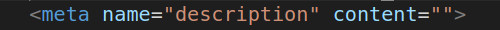

images Trop lourde : Les images sont trop lourdes de format "bmp" qui est un format non compressé, il ralenti le vitesse de chargement de la page
Amélioré les images : Avec un format plus adapté de type jpeg ou png on rendra la page moins lourde et donc on gagnera en fluidité
Mise en cache du navigateur
absence de cache, il impose le chargement de toutes les données à chaque fois qu'on visite le site
cache : La mise en cache permettrait le stockage de certaines informations comme par exemple les images qui peuvent demander plus de bande passante. La mise en cache permet de réutiliser efficacement des données précédemment récupérer ou traitées .
En minimisant les fichiers css et js on réduirait le temps de lecture
bonne pratique
Le site présente une mauvaise note car il met beaucoup trop de temps à charger du serveur .Il faut dans un premier temps réduire les images et mettre un cache pour qu'il n'est pas à charger toutes les données à chaque visite.
référencement
répétition: nom de recherche répétitive : source le bourrage de mots clés n’a pas d’effet positif pour le SEO
bonne pratique : utiliser des mots clés sans les répéter
non adapté au site : source
le trafic qu’il risque d’attiré ne sera pas de qualité
bonne pratique : utiliser des mots clés qui correspond au site
Mot clé pour paris le site sera référencer dans paris plutôt que Lyon .
bonne pratique : pour un bon référencement local utiliser la ville du commerce(Lyon)
Robots.txt et sitemap absent
Manque du fichier robot.txt pour configurer se qu’on souhaite afficher ou qu’on ne souhaite pas afficher. Les robots de moteus de recherche ne pourront pas identifier les pages que l’ont souhaite indexer sans sidemaps
bonne pratique : Des mots clés plus approprié ainsi que des mots clés local permettra d'avoir un meilleur référencement et d'être mieux positionné dans la file de recherche. Une recherche de mots clés plus adapté avec Kwfinder et Google keyword planner qui permettra de voir la concurrence en fonction des mots cléset ajout des fichiers sitemap ainsi que robots.txt
Titre dans le Head
Titre dans le head
En l’absence de titre cohérent de la balise title, google ne pourra pas référencer correctement le site et utiliser la balise en lien hypertexte
bonne pratiquesource
google accorde beaucoup de poids aux mots de cette balise, elle doit être renseigné.
Balise meta description

Absence de la description
Si la description est vide se qui se trouve sous le titre sera vide dans les moteurs de recherche
bonne pratique Mettre un descriptif dans cette balise permettra d’augmenter le taux de clics et d’avoir un descriptif du site sous le titre dans les moteurs de recherche
Div keywords
Mots clé caché
L’utilisation de mots clés caché mène directement aux sanctions et souvent vers la liste noirs des moteurs de recherche
bonne pratique
le supprimé et utilisé plutôt les mots clés dans l’article pour un référencement naturel
textes en image
Texte en image
Un texte est moins lourd qu’une image et va donc améliorer la vitesse de chargement
bonne pratique
Supprimé l’image et écrire directement le texte dans un blockote ou un h2
renseignement des images
Les balises
les balises alt des images sont renseignés par un bourrage de mots clé caché pour essayer de monter le site en référencement , se qui est interdit et risque de poser problème avec les moteurs de recherche
Bonne pratique
Faire une description de l’image clair et précise
balises sémantiques
Absence de balises sémantiques
En l'absence de balises sémantiques les moteurs de recherche vont avoir plus de mal à interpréter le contenu sans balises structurel
Bonne pratique
l’uilisation des balises permettra de structurer la page html et être mieux interpréter
Formulaire
balise label
ajouter la valeur de l’identifiant avec un for dans le label
Bonne pratique
La fin de la balise label doit se trouver à la fin de la balise input.